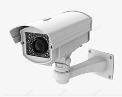

我们的服务
Full Secure Sdn Bhd 提供广泛的专业安全服务，以满足您在数字和物理世界中的独特需求。我们的服务包括但不限于：
-  CCTV 全面的网络安全评估、渗透测试、安全策略制定及DDoS防护。 了解更多
-
 Alarm
协助您建立健全的数据保护机制，确保符合GDPR、PDPA等法规要求。
了解更多
Alarm
协助您建立健全的数据保护机制，确保符合GDPR、PDPA等法规要求。
了解更多
-
Autogate
保护您在云环境中的数据和应用，确保云资源的安全性。
了解更多
-
Door Access
部署先进的监控系统、门禁控制和入侵检测系统。
了解更多
-
Barrier
为您的员工提供专业的安全意识培训，提升整体安全防范能力。
了解更多
-
Health Monitoring
在安全事件发生时，提供快速响应和灾难恢复服务，最大限度减少损失。
了解更多
我们致力于为您提供定制化、高效且可靠的安全保障，让您专注于核心业务发展。